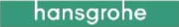
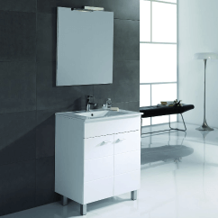
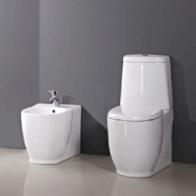
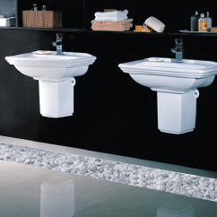

Умови акції
Новорічні знижки в «Агромат»
З 15 листопада 2016 року по 31 січня 2017 року в магазинах «Агромат» діють новорічні знижки до 50% на плитку, сантехніку, меблі, освітлення, кухні, паркет та килими.
Зима – час, коли хочеться особливого затишку і тепла.
Облаштуйте свою оселю до свят з нашою новою акцією!
Уже з 15 листопада в магазинах «Агромат» розпочинаються новорічні знижки до 50% на величезний асортимент плитки та сантехніки, а також на освітлення, меблі, паркет та килими.
Кращі дизайнерські колекції, приємні ціни та найвища якість! Нехай ця зима стане особливою!
Акція діє з 15.11.2016 по 31.01.2017 у всіх магазинах «Агромат».
Кількість товару обмежена.
Більше 1000 брендів з усього світу
- 
Плитка
Кожен наш клієнт – в душі дизайнер.
Адже з неймовірним вибором модних колекцій керамічної плитки створити індивідуальний інтер'єр – просто!
З 15 листопада по 31 січня 2017 роки не пропустіть можливість придбати керамічну плитку зі знижкою до 50%. Ми приготували для вас найактуальніші колекції від провідних європейських брендів: Cir, Vallelunga, Peronda, Marca Corona, Mainzu, Bestile, Venis та багатьох інших.
Приходьте та переконайтеся самі!
Пропозиція діє в усіх магазинах «Агромат».
Кількість товару обмежена.
Сантехніка
Не знаєте, в чому зустрічати Новий рік?
Зустрічайте його у ванній! У вашій новенькій ванній кімнаті, ідеальній, функціональній та неймовірно затишній!
Адже тільки у нас з 15 листопада по 31 січня 2017 можна придбати кращу сантехніку Villeroy&Boch, Geberit, Kolo та інших світових виробників зі знижками до 50%.
Сезон новорічних подарунків відкрито!
- 
- 
- 
Інше
Є речі, які роблять будинок затишним… Улюблене крісло, красивий килим, зроблений вручну, люстра з рідкісного кришталю чи паркет з цінних сортів дерева. Ми пропонуємо безліч товарів, які стануть справжньою окрасою вашого інтер'єру.
Ексклюзивні світильники Masiero та Creazioni, розкішні меблі ToscoNova, м'які дивани Koinor і Ditre, якісний дерев'яний паркет та унікальні італійські килими Sitap ручної роботи – все це зі знижками до 50%! Поспішайте до нас за подарунками для вашого дому!
Акція діє з 15 листопада 2016 по 31 січня 2017 у всіх магазинах «Агромат».
Адреси магазинів
Керамік Сіті
Київ,
вул. Булаховського 4,
Торговий центр
"Керамік Сіті"
- Пн-Нд: 10:00 – 20:00
- 0 (44) 392-28-11
Керамік Сіті
Київ,
вул. Булаховського 4,
Торговий центр
"Керамік Сіті"
- Пн-Нд: 10:00 – 20:00
- 0 (44) 392-28-11
Керамік Сіті
Київ,
вул. Булаховського 4,
Торговий центр
"Керамік Сіті"
- Пн-Нд: 10:00 – 20:00
- 0 (44) 392-28-11
Керамік Сіті
Київ,
вул. Булаховського 4,
Торговий центр
"Керамік Сіті"
- Пн-Нд: 10:00 – 20:00
- 0 (44) 392-28-11